I wanted these to all turn out good. For the people in them to be happy that they took them. To look back and be able to realize that the life they lived was worth it. Was something that they did not have to forget but something that they should strive to remember. I wanted them to feel natural, even though no one knows how to pose. I wanted them to feel like themselves. To let them chose their outfits, even though if they were a high school boy like a lot of the people I worked with then their mom picked it out for them. It is about the stories. Their grandfather's old shirt that has holes in it. The truck that they took their girlfriend on a first date in. The family christmas card. The graduating senior. All of these moments come with a cost, figurativley and literally. I mean it takes money to pay me but it also takes the time of the people in the photo. Many of them have better things to do but they chose to be there. For the memories. For the documentation. So that they can look back one day. They will be able to look back. Back in time.
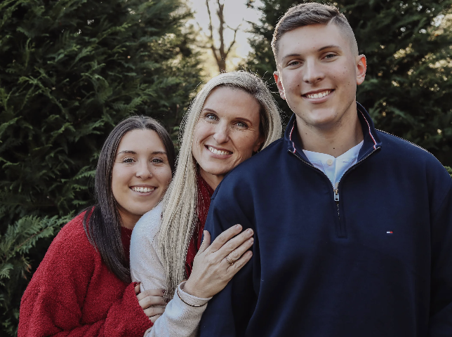
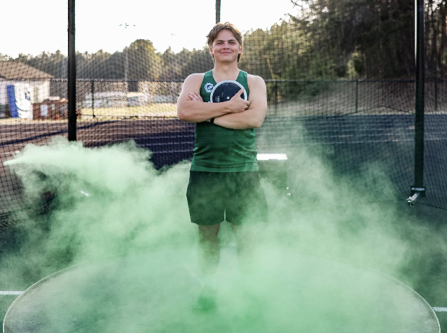
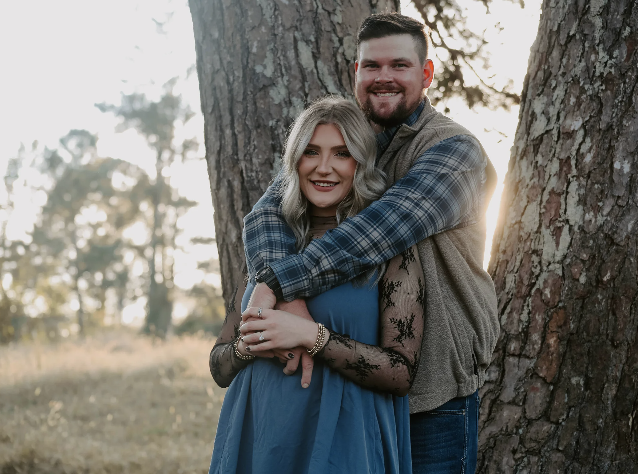
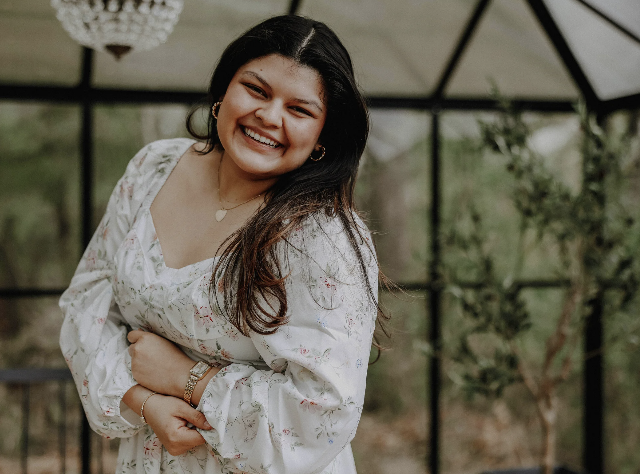
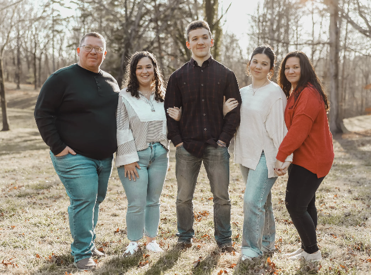
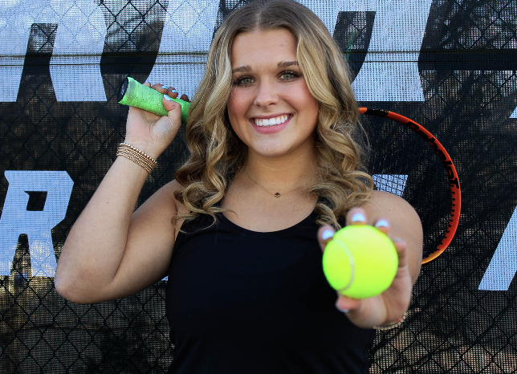
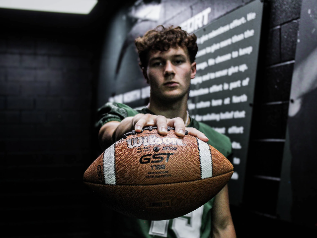
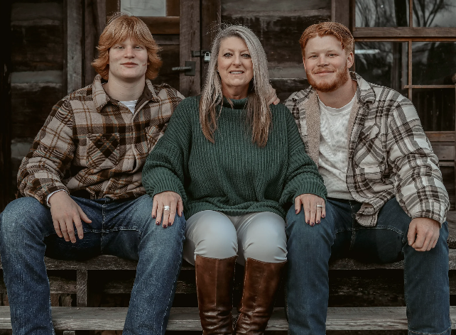
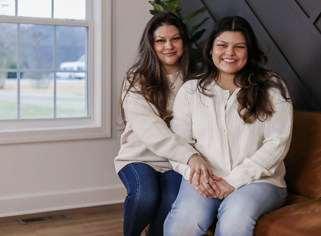
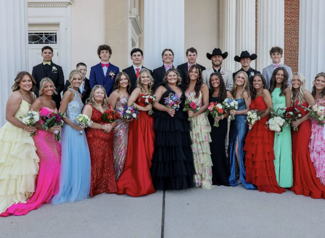
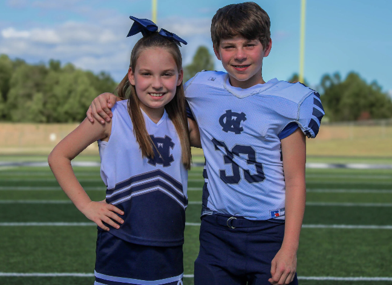